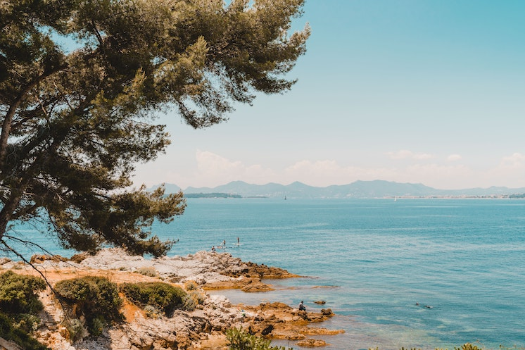
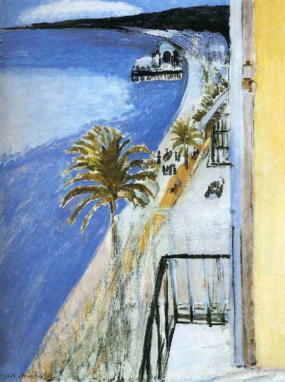
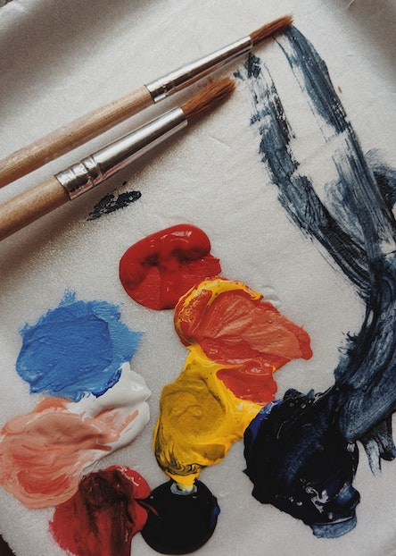
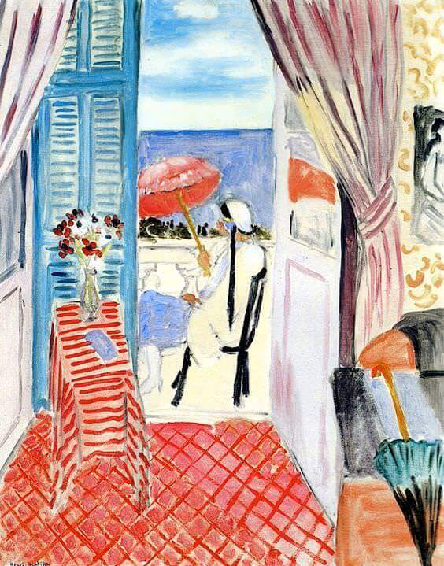
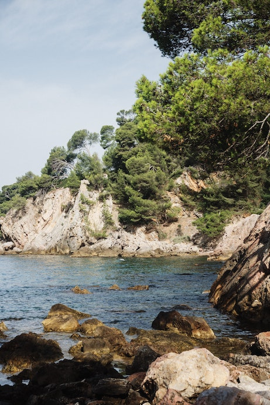
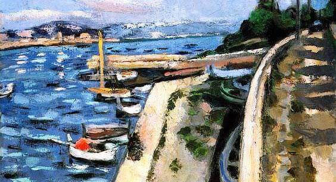

You spend your summers in French Riviera surrounded by the smell of sun, saltwater and oil paint...


"The Bay of Nice". Henri Matisse, 1918. Source: henrimatisse.org.
"You were never told that Saint-Tropez is paradise?" — Karl Lagerfeld


"Woman With a Red Umbrella". Henri Matisse, 1919. Source: henrimatisse.org.
"Every canvas is a journey all its own." — Helen Frankenthaler

"The secret to so many artists living so long is that every painting is a new adventure. So, you see, they're always looking ahead to something new and exciting. The secret is not to look back." — Norman Rockwell

"View of Antibes". Henri Matisse, 1925. Source: henrimatisse.org.